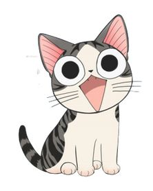

|  | Ariok David León Moreno |
BienvenidoHola mi nombre es Ariok David, actualmente soy estudiante de Ingenieria en Computacion, me gusta mucho jugar baloncesto y jugar videojuegos; asi mismo me gusta mucho el mundo de la tecnologia ya que es un campo muy amplio y muy interesante en todas sus ramas. Manejo lenguajes de programacion como Python, C++, Java; he aprendido de ramas como lo son Data Science y Cyberseguridad. |